Clarity simplicity audit
14 October 2026 · Six code audits (shell and library, editor, blocks and prospect page, recorder, share and stats, settings) plus a read-only pull of production usage. Nothing was changed.
The test for every control was whether it helps a client record, build a page, send it, or act on what the prospect did. Most of the product passes. The surface that fails falls into three groups. Some choices almost nobody makes, like themes, fonts, corners, four layouts and four button types. Some actions are reachable three or four ways. And one thing often has three or four names.
Three problems matter more than any button. They break the promise itself.
- The page is not built around the video. Clarity transcribes every recording, but the transcript only feeds auto-titles and auto-trim. Page generation never reads it (
workers/frontend-router/src/journey-page-generation.ts). A rep who records and clicks "Open page" gets a blank composer and has to type the context they just said out loud. - The rep can't see a prospect who clicks "buy". Pricing buttons are rendered without a tracking id (
render-values.ts:77), so the click is never recorded. Every one of the 1,138 tracked clicks in production came from a hero button. - The "call now" signal is off by default. Of the four view-email toggles, only "watched 60%" is on. "Started watching" is off, and clicking a button sends no email at all. Stats rows also say "Today" with no hour.
What customers actually use
Production database, read-only. Customer pages created in the last 90 days: 290 pages by 108 owners. Internal and test accounts were excluded; they made 500 of the 791 recent pages, and one test account alone made 231.
| Signal | Number | What it says |
|---|---|---|
| Pages that are a single block (the video and its button) | 146 of 290 (50%) | Half of customers use Clarity as a video with a button. 70% of pages have one or two blocks. The page builder serves the other 30%. |
| Pages with no theme chosen | 270 of 290 (93%) | The style panel's 29 choices go almost unused. Defaults decide how pages look. |
| Hero / story present | 283 / 142 | Video first, then some text and media. |
| FAQ / logos / pricing present | 53 / 33 / 21 | The add-ons people actually choose. |
| Document / gallery / form / summary present | 16 / 13 / 12 / 9 | Each is on 3 to 6% of pages. They belong in the add menu, not in default pages or prompts. |
| CTA clicks by button, all accounts | 811 / 209 / 87 / 31 | Primary, custom, sign, payment. A second button earns its place. The third and fourth barely do. |
| Users who ever trimmed / clipped a video | 6 / 4 | Trimming should be automatic and silent, not a three-way toggle. |
| Users who ever added a document | 28 | Keep it, but it is not a primary action. |
| Section views, scroll depth, return visits | 0 rows ever | These analytics events are defined but never fire. They are either dead code or a broken feature. |
The single-block number changes the priorities. The fastest win is making the one-block page great. That means a strong default look, one clear button, and a link copied right after recording. Most of the editor can then sit behind "Add section" without slowing anyone down.
The ten changes that matter most
- Feed the video's transcript into page generation, and open the composer automatically. After recording, "Open page" should become "Build page". The editor opens with the composer showing and the transcript attached, and the rep answers one question: who is this for? This is the "under two minutes" promise. Fix
- Track every button on the prospect page. Give pricing and document buttons their own ids so "clicked Choose this plan" reaches the rep. Fix
- One notification switch, on by default: "Email me when a prospect watches", fired on start, with how far they got in the body. Add "clicked a button" as a trigger. It replaces four toggles. Merge
- Cut the style panel to presets plus "More". Delete Size and Corners because the preset sets them. Put Fonts, Background and the custom color picker behind "More". Brand color comes from Settings. Logo lives on the canvas only. 93% of customer pages never set a theme. DeleteHide
- Two hero buttons, no button types. Delete the "Primary" switch and the Sign / Payment / Custom slots. The first button is the main one. Default labels become "Book a call" and "Learn more"; today "Custom" and "Calendar" can show up on a prospect's page. DeleteRewrite
- One Settings page instead of five pages plus Profile. Brand, Notifications, Plan, Your account. Delete Address, Timezone, Work and Home phone (nothing reads them), the read-only Email field and the duplicate Company field. Replace the Password page with a reset-email button. MergeDelete
- One stats view with one vocabulary. Video stats is a separate 583-line modal that sorts differently from page stats. Merge it into the page stats table, newest first, with "12m ago" instead of "Today". Use "visits" for pages and "plays" for video, everywhere. Delete the clickable mini-page preview, the "3 of 5 watching" scrub readout and the retention curve under five plays. MergeDelete
- Make Record the first action on Home. Today the button order is Upload, Record video, New Journey Page, and the filled button is New Journey Page. Record goes first and filled. The empty state "Your workspace is empty" becomes "Record your first video". Rewrite
- Take Learn and Contacts out of the main nav. Learn is nine static videos in four tabs, and some predate the current editor; move it to "Help" in the account menu. Contacts is a mini CRM (Department, Industry, Import CSV) that never shows which page a lead came from. Replace it with per-page "Leads" showing source page and date. HideMerge
- Replace the trim toggles with automatic trim. The finish screen shows seven toggles above three buttons. Auto-trim applies silently. The handles stay, and one "Restore full video" link appears only when a trim is set. "Preview" becomes "Thumbnail". Four recording layouts become three: Camera, Screen, Camera + screen. DeleteMerge
Proposed path from record to sent
- Record video
- Record camera
- Stop
- Look at 7 trim and thumbnail toggles
- Open page
- AI Generate
- Type the context again or pick a chip
- AI Generate, wait
- Share
- Publish
- Copy link
About 12 clicks and 4 decisions. The page knows nothing the rep said.
- Record video
- Start recording, with the last layout and devices remembered
- Stop
- Build page, with the transcript attached
- Answer "Who is this for?"
- Share, which publishes and copies in one click
6 clicks, 1 decision. Style, logo and button defaults come from Settings.
One name per thing
| Today | Use |
|---|---|
| "N prospects", "Form submissions", "<page> - Contacts", Contacts | Leads |
| "plays", "views", "Page visits", "visitor" | visits (page), plays (video) |
| "Statistics" on two different modals | Activity |
| "Unpublished changes", "Changes not published" | Changes not published |
| Video card "Share", which opens the editor | Make page |
| "AI Generate" | "Write page" on a new page, "Edit with AI" after |
| "Open page" after recording | Build page |
| "Record camera", "Record split", "Record inset", "Record screen" | Start recording |
| Video edit tab "Preview" | Thumbnail |
| Add-section tiles "Story", "Document", "Form" | Text and media, PDF, Lead form |
| Image "Edit", which opens the picker | Replace |
| "Overview media", "Add media" on the hero | Your video, Add video |
| "Search this workspace", "Your workspace is empty" | Search, Record your first video |
| "Calendar link" in Profile | Booking link, in Brand settings |
| Title Case buttons ("Cancel Subscription", "Brand Color", "Create Contact") | Sentence case |
Full cut list by surface
Home and library
- DeleteSidebar folder tree under Home. It's a fourth way into folders after folder cards, breadcrumbs and Move.
AppSidebar.tsx:190 - DeleteThe
?cards=classiccard branch, a dead A/B flag whose own comment says "drop once settled". Move "Cancel upload" to the frost card first.use-frost-cards.ts:9 - DeleteShelf "Show all" links. The shelf heading and the type tab already go there.
HomeDashboardShelves.tsx:124 - Delete"Share" and "Edit" in the page card menu. The card click edits and the Share button is always visible. Keep Edit on phones.
TreeNodeCardMenu.tsx:84,115 - MergeThe Images and Documents tabs into "Files". They are page ingredients, not things a rep sends.
HomeTreeRoute.tsx:150 - MergeThe phone header "Record" into the center Record tab.
HomeTreeRoute.tsx:1615 - DeleteThe four Learn sub-tabs over nine videos ("Todd's Tips" holds one).
LearnIndexRoute.tsx:159 - RewriteThe page title stays "Home" inside a folder; show the folder name. 404 "Go to your library" becomes "Go to Home". "Untitled Folder" becomes "New folder".
Page editor
- MergeRemove section is offered twice, in the grip menu with a confirm and as a trash button. Keep the trash.
CanvasReorder.tsx:285 - MergeLogos inside a story get their own move and remove controls, a third path. Fold them into the grip.
LogosRowEditor.tsx:111 - MergeThe default logo is asked about three times, in the style panel, a canvas prompt and Settings. Keep the one checkbox.
ThemeStylePanel.tsx:101,LogoDefaultChoice.tsx:22 - MergeMedia size has S/M/L plus a drag grip. Keep S/M/L.
JourneyMediaResizer.tsx - Delete"Wrap text" on story media.
MediaPicker.tsx:361 - HideThe left, center and right align bar on every heading. Let the preset decide.
EditableText.tsx:278 - DeleteThe starter chips "Webinar invite", "Welcome page", "Product demo", "Pricing page", "Case study". Keep Follow-up, Proposal, Prospect journey.
page-tweaks.ts:22 - DeleteThe "Describe the offer" chip. It writes a description no renderer shows on the page.
page-tweaks.ts:42 - RewriteThe "Add a three-tier pricing section" chip contradicts the AI rule to add pricing only when asked.
page-tweaks.ts:44 - FixThe hero's "+ Add" button inserts a "Get Started" button with one click, no menu and no confirm. The screenshot browser added three by accident while looking around. Show a small menu, or insert and focus the label so the rep sees what happened.
- RewriteAdd a visible "Live" or "Draft" label. Today the save and publish state only shows in Share's tooltip.
- RewriteThe icon-only paintbrush becomes a labelled "Style" button. The preset and the font pair both named "Editorial" need different names.
Blocks and the prospect page
- HideSummary table column insert, drag and remove, up to four. The AI only writes two columns.
SummaryTableEditor.tsx:338 - HideThe gallery column stepper; derive the column count from the number of images. And the logos "Auto / Muted / Full color" switch, since Auto covers it.
- DeleteThe form's "Cancel" button. One mis-click wipes what the prospect typed.
render-blocks.ts:562 - RewriteForm defaults. "Enter First Name" becomes "First name". Phone becomes optional. The consent line becomes "I agree to be contacted about this proposal." "Form submitted successfully" becomes "Thanks, we'll be in touch.", with a link back to the page.
- RewritePricing button default "Learn more" becomes "Choose this plan".
PricingEditor.tsx:314 - FixHero contact email and phone render as plain text you can't click. Make them mailto and tel links.
render-blocks.ts:392 - MergeThe hero button row repeats under a document with the same tracking ids. Make it one closing button at the end of the page.
- DeleteThe story
subtitlefield, which is stored but never rendered or edited.
Recorder and video editing
- Merge"Camera inset" and "1/3 split" into "Camera + screen".
RecorderLayoutPicker.tsx:23 - DeleteThe
CTA_WORDmap that makes the button read "Record split". Use one "Start recording" button.RecordVideoRoute.tsx:78 - MergeRemember the last layout, camera and microphone between visits. Today every visit starts at Camera only with no stored device.
use-canvas-compositor.ts:72 - MergeThe library opens the same video edit modal three ways: card click, pencil and menu Edit. A video card click opens a trim tool, not playback.
- RewriteSave works differently in two places. The recorder autosaves; the modal saves only on Done and drops the draft on Cancel. Make both autosave.
- RewriteThe recovery card drops megabytes and shows "Today 3:04 PM". "Retry save" becomes "Try again". "Preparing trim" becomes "Saving trim".
Sharing and stats
- Delete"Draft version 3 · Published version 2" in the share dialog.
JourneyPageShareDialog.tsx:174 - Hide"Unpublish" and the password switch under "More options". They sit beside the copy button and most reps never use them.
- DeleteThe legacy locations view, "No location or session detail for these views" and "Totals come from a stored summary".
VideoStatsModal.tsx:244 - RewriteLead page stats with "Last visit 12m ago". Email CTA "See page stats" becomes "See what they watched".
Settings, plan and sign-in
- Fix"Upgrade to Pro to keep your pages, videos and links after the trial ends." This is false, because sent pages stay live. Use "Upgrade to keep recording and editing. Pages you've sent stay live."
SubscriptionRoute.tsx:423 - MergePolicyBilling and Subscription into one Plan section with a "Manage billing" button to the Stripe portal. The portal link code already exists. The card list's "Add a payment method" empty state has no add button.
- DeletePolicyThe cancel dialog's required reason and "Would you consider re-subscribing in the future?"
- Merge"Time left" and "Trial ends" into "Trial ends Oct 28 (14 days)". Delete "Started".
- RewriteBrand helper: "New pages start with your logo and color." Settings opens on Notifications, not Branding.
- RewriteThere are two support addresses, hello@ on sign-in and support@ on the trial wall; pick one. "Your trial has expired" becomes "Your trial has ended".
- RewriteSign-in rail "Close 2-3x More Deals by Giving Your Prospects Clarity" becomes "Send a personal video page in two minutes."
Decisions that are yours
- Billing UI. Should the Stripe portal replace the in-app card list, and should the cancel survey go?
- Pricing and summary. Pricing is on 7% of customer pages and summary on 3%. Fold them into one "Pricing and scope" block, or keep both? I'd keep pricing, fold summary into it, and drop the three-tier chip.
- Contacts. Replace it with per-page Leads, or keep the CRM for the few who import CSVs?
- Notifications. One switch fired on "started watching", or keep "started" and "finished" as two? The auditors split. I'd ship one switch with depth in the email.
Bugs found along the way, not fixed
- Billing never loads the default card id, so the real default shows no badge and can be deleted like any other card.
BillingRoute.tsx:92 - Branding save failures are swallowed with no message.
BrandingRoute.tsx:80 - The trial wall sells monthly only; the Subscription page sells monthly and annual.
- 401 stored form submissions against 65
page_form_submitevents, so submit tracking undercounts. - A notification preference, "someone shared my video", defaults to on and has no UI.
- Stale comments:
AddSection.tsxsays six tiles and no repeats (there are eight, and repeats are allowed).CtaRowEditor.tsxrefers to a side panel that no longer exists.CONTEXT.mdputs title, description and button on video Edit metadata, but they live on the hero block.
Screens
Staging, test account with fixture data, 14 October 2026. A face, an email address and a location are blurred. Tap a shot to open it full size.

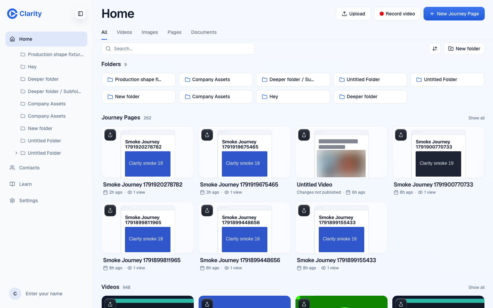

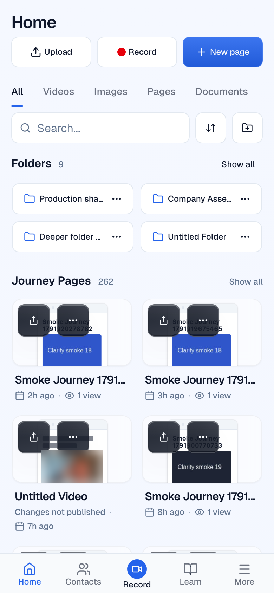

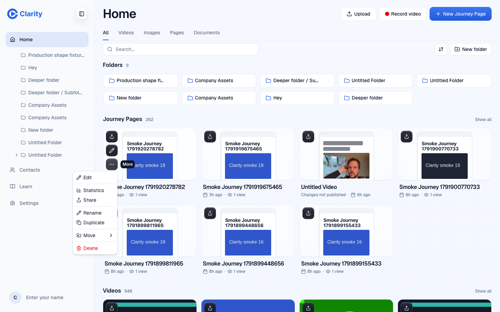


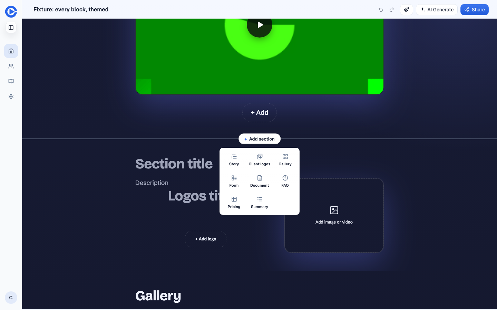

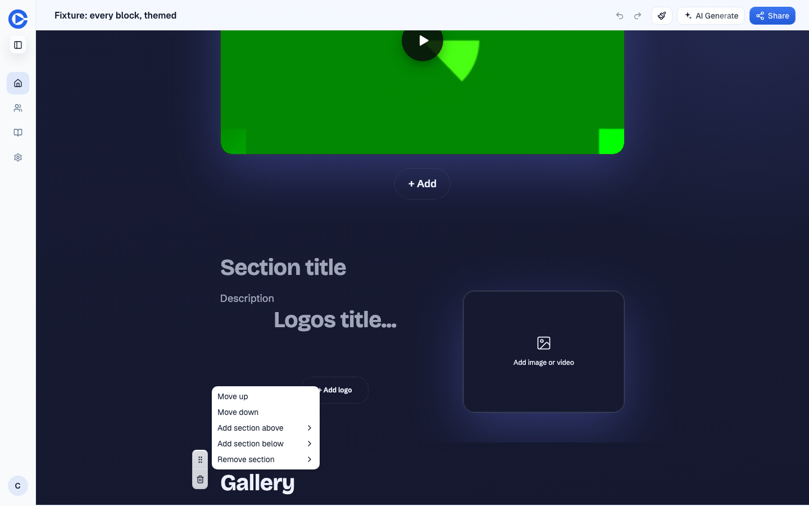

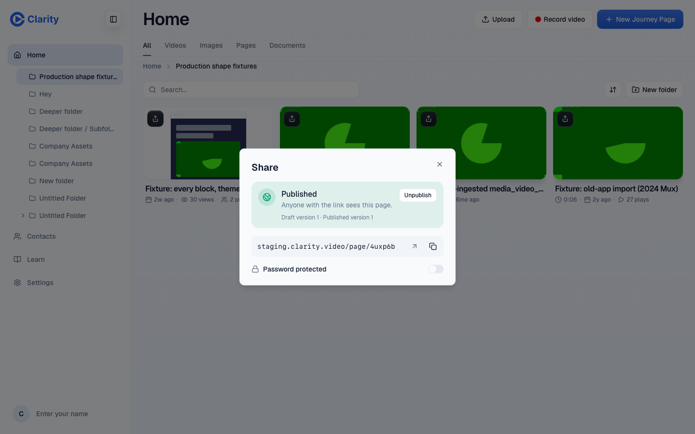


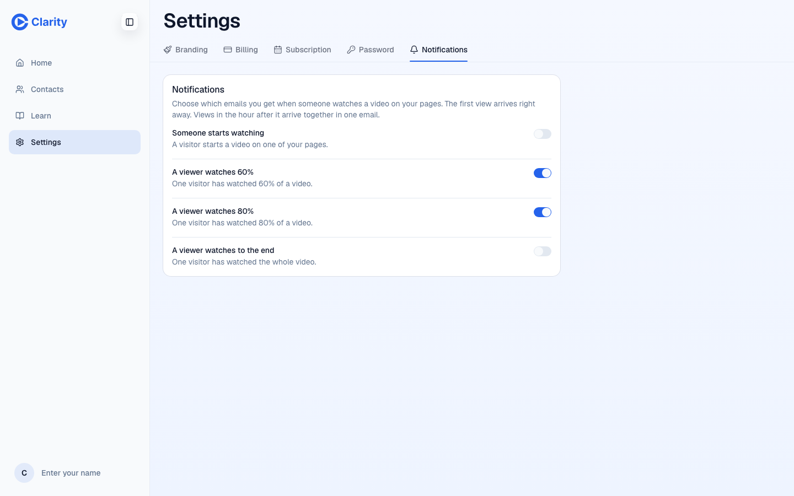


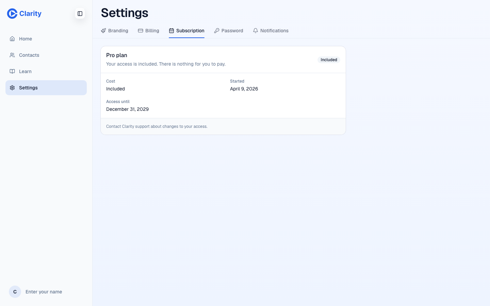

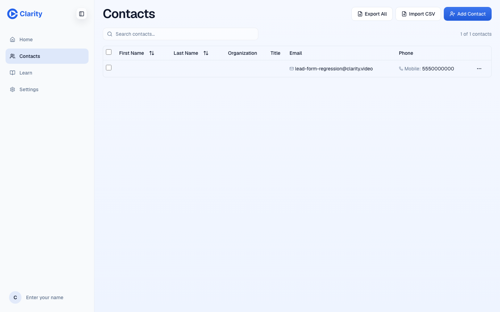

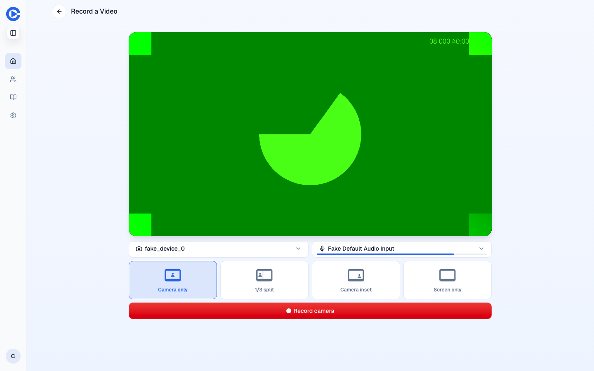

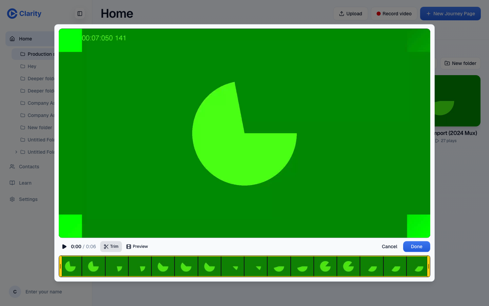